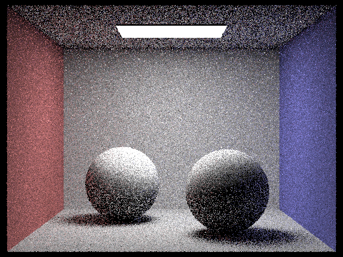

CS184 Project 3-1 - Max Lord and Eugenia Gavrilova
Overview
1. An overview of the project, including your approach to and implementation for each of the parts, as well as what problems you have encountered and how you solved them.
Part 1
1. Walk through the ray generation and primitive intersection parts of the rendering pipeline.
For ray generation, we first convert hFov and vFov to radians, then set the x,y,z of the ray in camera space with the given formula.
Next, we converted the x,y,z to world coordinates by multiplying to the camera-to-world matrix. Finally, we defined
the ray with the camera position and the unit vector representing our world coordinates, then setting max_t and min_t to fClip and nClip.
For triangle intersection (further discussed in next question), we use Moller Trumbore to get the proper t value of the intersection,
then check its validity with max_t and min_t, then check it is contained in the triangle with the point-in-triangle test from lecture.
For sphere intersection, we use the ray-sphere intersection formula from lecture, giving us two possible intersection points.
We choose the smaller legitimate value of these two and find the normal vector
with the corresponding point in the ray at this time and using that to get the necessary unit vector to fill the intersection object.
2. Explain the triangle intersection algorithm you implemented in your own words.
We used Moller Trumbore to find the correct t for the intersection, then checked the corresponding point's validity,
then used the point-in-triangle test to verify that point was in the triangle. Moller Trumbore works by using Cramer's rule
on a specifically crafted matrix and vector of determinants, which provides a faster intersection algorithm than the first ray-plane intersection
algorithm discussed in lecture.
3. Show images with normal shading for a few small .dae files.

Part 2
1. Walk through your BVH construction algorithm. Explain the heuristic you chose for picking the splitting point.
Our BVH construction algorithm begins by creating a bounding box that encompasses all of the primitives located within the range of the start and end iterators.
If there are less than or equal to the maximum number of primitives in a leaf, we create a node that encompasses the box
and assign the node’s start and end iterators to encompass the primitives. Otherwise, we get the average of the centroids
of each primitive’s respective box and split at the average point along the longest axis of the all-encompassing box.
Then, we partition the primitives into left and right child nodes depending on whether they are located at a coordinate
less than or greater than the average value, and recurse construct_bvh on the children.
2. Show images with normal shading for a few large .dae files that you can only render with BVH acceleration.
3. Compare rendering times on a few scenes with moderately complex geometries with and without BVH acceleration. Present your results in a one-paragraph analysis.
First, we examined the teapot which has 2464 primitives. The teapot took 15.86 seconds without BVH acceleration
and took 0.14 seconds with BVH acceleration. The cow has 5856 primitives, and took 43.36 seconds without BVH acceleration and
0.13 seconds with BVH acceleration. Finally, the beetle has 7558 primitives, and took 50.54 seconds without BVH acceleration and
0.09 seconds with BVH acceleration. All calculations were done on a Macbook Pro. As we can see, there is an extreme speedup going from
non-BVH acceleration to BVH acceleration, which allows even more complex DAEs to be rendered in a reasonable amount of time.
Part 3
1. Walk through both implementations of the direct lighting function.
2. Show some images rendered with both implementations of the direct lighting function.
(uniform hemisphere sampling on left, light sampling on right)

The dragon file being black using hemisphere sampling is expected because it contains a point and directional light which have no geometry in the scene so hemisphere sampling can't render it.
3. Focus on one particular scene with at least one area light and compare the noise levels in soft shadows when rendering with 1, 4, 16, and 64 light rays (the -l flag) and with 1 sample per pixel (the -s flag) using light sampling, not uniform hemisphere sampling.
(Starting from 1 light ray)

The soft shadows get less noisy as we increase the number of light rays because it allows for more precision.
4. Compare the results between uniform hemisphere sampling and lighting sampling in a one-paragraph analysis.
Uniform hemisphere sampling creates noisier images, as any solid faces are interspersed with black dots due to a lack of precision.
Lighting sampling creates crisp colors and a perfect gradient of color due to lighting on the faces of objects in a scene,
as opposed to the messy gradient in uniform hemisphere sampling. Additionally, as we can see with the dragon,
there are some scenes that lighting sampling can render than uniform hemisphere sampling cannot, due to the point and directional light.
In the last section, we saw that we can decrease noise in lighting sampling by increasing the number of light rays.
Part 4
1. Walk through your implementation of the indirect lighting function.
First, we find the one_bounce_radiance as the base ray for direct lighting. Then, we check if we should cut off the recursion by virtue of either russian roulette or maximum ray depth.
Next, we sample the bsdf function of our given intersection point by using the given w_out. Since we are drawing inverse rays,
we draw a new ray starting at the hit point and going out in the w_in direction while decrementing its depth by 1.
Finally, we check if our newly created ray intersects the bvh, and if so, we call our function recursively and weight the output by the sample bsdf, cos(w_in), and the inverse of the pdf,
then add that result to the running sum initialized with the direct lighting.
2. Show some images rendered with global (direct and indirect) illumination. Use 1024 samples per pixel.
3. Pick one scene and compare rendered views first with only direct illumination, then only indirect illumination. Use 1024 samples per pixel.
4. For CBbunny.dae, compare rendered views with max_ray_depth set to 0, 1, 2, 3, and 100 (the -m flag). Use 1024 samples per pixel.
(0,1,2,3,100 in order)
5. Pick one scene and compare rendered views with various sample-per-pixel rates, including at least 1, 2, 4, 8, 16, 64, and 1024. Use 4 light rays.
(1,2,4,8,16,64,1024 in order)

Part 5
1. Walk through your implementation of the adaptive sampling.
First, we initialize the suggested s1 and s2 running totals. Next, we proceed into our normal sampling loop for a pixel.
For each sample, we increment s1 and s2 based on the illuminance calculation, then if our loop index is a multiple of
samples per batch, we calculate the mean and variance of our samples so far using s1 and s2. Then, we check if 1.96 * (std dev / sqrt(n))
is less than or equal to the mean times maxTolerance, where n is the number of samples seen so far. If so, we save the number of actual samples we took before breaking,
and break the loop. Next, we make sure to use the actual samples we took, not the max number of samples when calculating radiance average,
then also use that actual samples number when setting the corresponding value in sampleCountBuffer.
2. Pick one scene and render it with at least 2048 samples per pixel. Show a good sampling rate image with
clearly visible differences in sampling rate over various regions and pixels. Include both your sample rate image,
which shows your how your adaptive sampling changes depending on which part of the image you are rendering, and your noise-free rendered result. Use 1 sample per light and at least 5 for max ray depth.

Collaboration
We split up the project and each partner did specific parts instead of pair programming due to availability.
We kept in contact regarding our progress so we could continue where the other partner left off.
Website Link
https://cal-cs184-student.github.io/sp22-project-webpages-maxqlord/proj3-1/index.html